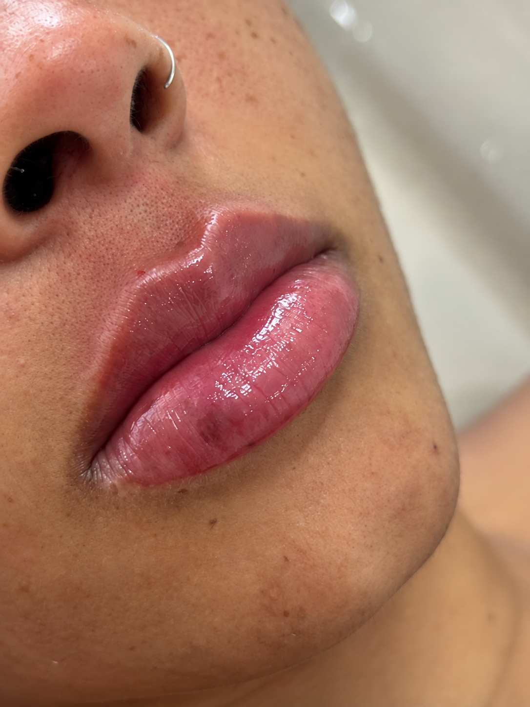

Contorno
Definição cuidadosa do desenho e dos limites dos lábios.
Harmonia dos lábios
Contorno, hidratação, sustentação ou volume na medida certa para a sua anatomia, sempre com planejamento e respeito às proporções.

Resultado real — imagem autorizadaO tratamento
O preenchimento labial utiliza ácido hialurônico para trabalhar características como contorno, proporção, hidratação e sustentação.
A quantidade ideal não é igual para todos. Ela depende da anatomia, do objetivo e do planejamento. A prioridade é alcançar um resultado harmônico e coerente com o rosto.
Possibilidades
Definição cuidadosa do desenho e dos limites dos lábios.
Estratégias específicas para lábios finos ou com perda de suporte.
Ajustes sutis considerando a relação entre lábios e restante do rosto.
Como funciona
Análise da anatomia, proporção, mobilidade e objetivo.
Escolha da estratégia e da quantidade mais adequada ao caso.
Aplicação cuidadosa, seguindo o planejamento individual.
Orientações pós-procedimento e avaliação da acomodação do produto.
Duração
A duração pode variar conforme metabolismo, produto utilizado e hábitos da paciente.
Conversar pelo WhatsApp ↗A indicação, a quantidade, a duração e os resultados dependem de avaliação individual.